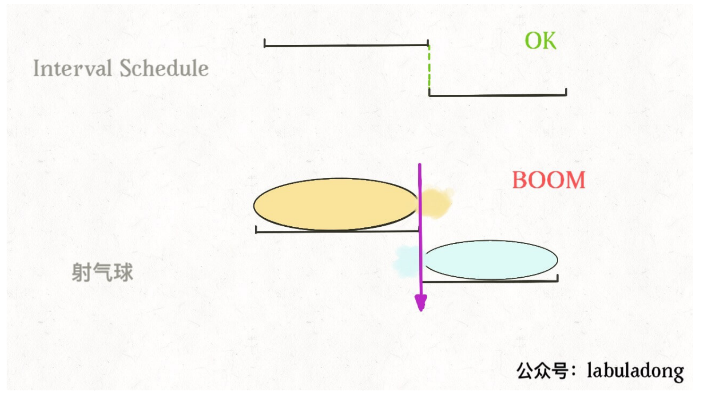

贪心算法 #
1 定义 #
贪心算法可以认为是动态规划算法的一个特例，相比动态规划，使用贪心算法需要满足更多的条件（贪心选择性质），但是效率比动态规划要高。
贪心选择性质： 简单地说就是每一步做出一个局部最优的选择，最终的结果就是全局最优。需要注意的是，这是一种特殊性质，只有一部分问题拥有这个性质。
- 比如面前放着 100 张人民币，我们只能拿 10 张，怎么才能拿到最多的面额？显然每次选择剩下钞票中面值最大的一张，最后我们的选择一定是最优的。
- 但是大部分问题明显不具有贪心选择性质，比如斗地主，对手出对儿三，按照贪心策略，我们应该出尽可能小的牌刚好压制住对方，但现实情况我们甚至可能会出王炸。这种情况就不能用贪心算法，而得使用动态规划解决。
2 示例 #
2.1 区间调度问题 #
2.1.1 无重叠区间 #
2.1.1.1 题目 #
给定一个区间的集合，找到需要移除区间的最小数量，使剩余区间互不重叠。
注意:
1. 可以认为区间的终点总是大于它的起点。
2. 区间 [1,2] 和 [2,3] 的边界相互“接触”，但没有相互重叠。
示例 1:
输入: [ [1,2], [2,3], [3,4], [1,3] ]
输出: 1
解释: 移除 [1,3] 后，剩下的区间没有重叠。
示例 2:
输入: [ [1,2], [1,2], [1,2] ]
输出: 2
解释: 你需要移除两个 [1,2] 来使剩下的区间没有重叠。
示例 3:
输入: [ [1,2], [2,3] ]
输出: 0
解释: 你不需要移除任何区间，因为它们已经是无重叠的了。
2.1.1.2 问题分析 #
这个问题的实质是需要我们设计一个算法，算出这些区间中最多有几个互不相交的区间。
这个问题在生活中的应用广泛，比如我们今天有好几个活动，每个活动都可以用区间 [start, end] 表示开始和结束时间，请问我们今天最多能参加几个活动呢？显然我们一个人不能同时参加两个活动，所以说这个问题就是求这些时间区间的最大不相交子集。
正确的思路其实很简单，可以分为以下三步：
- 从区间集合
intvs中选择一个区间x，这个x是在当前所有区间中结束最早的（end 最小）。 - 把所有与
x相交的区间从区间集合intvs中删除。 - 重复步骤 1 和 2，直到
intvs为空为止，之前选出的那些x就是最大不相交子集。
把这个思路实现成算法的话，可以按每个区间的 end 数值升序排序，因为这样处理之后实现步骤 1 和步骤 2 都方便很多。

现在来实现算法，对于步骤 1，由于我们预先按照 end 排了序，不难发现所有与 x 相交的区间必然会与 x 的 end 相交，他的 start 必然要大于或等于 x 的 end：

2.1.1.3 参考代码 #
package com.grayson.top;
import org.apache.commons.lang3.time.StopWatch;
import java.util.Arrays;
import java.util.concurrent.TimeUnit;
/**
* @author peng.wei
* @version 1.0
* @date 2021/3/23 21:19
* @Description 无重叠区间
*/
public class L435 {
/**
* 435.无重叠区间
* 给定一个区间的集合，找到需要移除区间的最小数量，使剩余区间互不重叠。
* @param intervals 区间集合
* @return 需要移除区间的最小数量
*/
public static int eraseOverlapIntervals(int[][] intervals) {
if (intervals.length == 0) {return 0;}
Arrays.sort(intervals, (int[] a, int[] b) -> a[1] - b[1]);
int count = 1;
int x_end = intervals[0][1];
for (int i = 1; i < intervals.length; i++) {
if (intervals[i][0] >= x_end) {
count++;
x_end = intervals[i][1];
}
}
return intervals.length - count;
}
public static void main(String[] args) {
StopWatch stopWatch = new StopWatch();
stopWatch.start();
int[][] intervals = {{1,2}, {2,3}, {3,4}, {1,3}};
int res = eraseOverlapIntervals(intervals);
stopWatch.stop();
System.out.println(String.format("测试用例 1 结果为：%s，执行用时：%s 微秒", res, stopWatch.getTime(TimeUnit.MICROSECONDS)));
stopWatch.reset();
stopWatch.start();
intervals = new int[][]{{1,2}, {1,2}, {1,2}};
res = eraseOverlapIntervals(intervals);
stopWatch.stop();
System.out.println(String.format("测试用例 2 结果为：%s，执行用时：%s 微秒", res, stopWatch.getTime(TimeUnit.MICROSECONDS)));
stopWatch.reset();
stopWatch.start();
intervals = new int[][]{{1,2}, {2,3}};
res = eraseOverlapIntervals(intervals);
stopWatch.stop();
System.out.println(String.format("测试用例 3 结果为：%s，执行用时：%s 微秒", res, stopWatch.getTime(TimeUnit.MICROSECONDS)));
}
}
2.1.2 用最少数量的箭引爆气球 #
2.1.2.1 题目 #
在二维空间中有许多球形的气球。对于每个气球，提供的输入是水平方向上，气球直径的开始和结束坐标。由于它是水平的，所以纵坐标并不重要，因此只要知道开始和结束的横坐标就足够了。开始坐标总是小于结束坐标。
一支弓箭可以沿着 x 轴从不同点完全垂直地射出。在坐标 x 处射出一支箭，若有一个气球的直径的开始和结束坐标为 xstart，xend， 且满足 xstart ≤ x ≤ xend，则该气球会被引爆。可以射出的弓箭的数量没有限制。 弓箭一旦被射出之后，可以无限地前进。我们想找到使得所有气球全部被引爆，所需的弓箭的最小数量。
给你一个数组 points ，其中 points [i] = [xstart,xend] ，返回引爆所有气球所必须射出的最小弓箭数。 示例 1：
输入：points = [[10,16],[2,8],[1,6],[7,12]]
输出：2
解释：对于该样例，x = 6 可以射爆 [2,8],[1,6] 两个气球，以及 x = 11 射爆另外两个气球
示例 2：
输入：points = [[1,2],[3,4],[5,6],[7,8]]
输出：4
示例 3：
输入：points = [[1,2],[2,3],[3,4],[4,5]]
输出：2
示例 4：
输入：points = [[1,2]]
输出：1
示例 5：
输入：points = [[2,3],[2,3]]
输出：1
2.1.2.2 问题分析 #
这个问题和区间调度的算法一样，如果最多有 n 个不重叠的区间，那么就至少需要 n 个箭头穿透所有区间。

只是有点不一样，在 无重叠区间 算法中，如果两个区间的边界触碰，不算重叠，而按照这道题目的描述，箭头如果碰到气球的边界，气球也会爆炸，所以说相当于区间的边界触碰也算重叠。

所以只要将之前的算法稍作修改，就是这道题目的答案。
2.1.2.3 参考代码 #
package com.grayson.top;
import org.apache.commons.lang3.time.StopWatch;
import java.util.Arrays;
import java.util.concurrent.TimeUnit;
/**
* @author peng.wei
* @version 1.0
* @date 2021/3/24 14:05
* @Description 用最少数量的箭引爆气球
*/
public class L452 {
/**
* 452.用最少数量的箭引爆气球
* 在二维空间中有许多球形的气球。对于每个气球，提供的输入是水平方向上，气球直径的开始和结束坐标。由于它是水平的，所以纵坐标并不重要，因此只要知道开始和结束的横坐标就足够了。开始坐标总是小于结束坐标。
* 一支弓箭可以沿着 x 轴从不同点完全垂直地射出。在坐标 x 处射出一支箭，若有一个气球的直径的开始和结束坐标为 xstart，xend， 且满足 xstart ≤ x ≤ xend，则该气球会被引爆。可以射出的弓箭的数量没有限制。 弓箭一旦被射出之后，可以无限地前进。我们想找到使得所有气球全部被引爆，所需的弓箭的最小数量。
* 给你一个数组 points ，其中 points [i] = [xstart,xend] ，返回引爆所有气球所必须射出的最小弓箭数。
* @param points 气球位置
* @return 引爆气球所需要的箭的最少数量
*/
public static int findMinArrowShots(int[][] points) {
// 如果没有气球，则返回 0
if (points.length == 0) {return 0;}
// 对气球坐标按照 xend 正序排序
Arrays.sort(points, (int[] a, int [] b) -> {
// 防止 a[1] - b[1] 越界导致排序不正确
// [[-2147483646,-2147483645],[2147483646,2147483647]]
if (a[1] > b[1]) {return 1;}
else {return -1;}
});
// 至少需要一个箭
int count = 1;
// 遍历计算引爆气球所需的最少数量的箭
int x_end = points[0][1];
for (int i = 1; i < points.length; i++) {
int start = points[i][0];
if (start > x_end) {
// 找到下一个不相邻的起球了
count++;
x_end = points[i][1];
}
}
return count;
}
public static void main(String[] args) {
StopWatch stopWatch = new StopWatch();
stopWatch.start();
int[][] intervals = {{10,16}, {2,8}, {1,6}, {7,12}};
int res = findMinArrowShots(intervals);
stopWatch.stop();
System.out.println(String.format("测试用例 1 结果为：%s，执行用时：%s 微秒", res, stopWatch.getTime(TimeUnit.MICROSECONDS)));
stopWatch.reset();
stopWatch.start();
intervals = new int[][]{{1,2}, {3,4}, {5,6}, {7,8}};
res = findMinArrowShots(intervals);
stopWatch.stop();
System.out.println(String.format("测试用例 2 结果为：%s，执行用时：%s 微秒", res, stopWatch.getTime(TimeUnit.MICROSECONDS)));
stopWatch.reset();
stopWatch.start();
intervals = new int[][]{{1,2}, {2,3}, {3,4}, {4,5}};
res = findMinArrowShots(intervals);
stopWatch.stop();
System.out.println(String.format("测试用例 3 结果为：%s，执行用时：%s 微秒", res, stopWatch.getTime(TimeUnit.MICROSECONDS)));
// [[-2147483646,-2147483645],[2147483646,2147483647]]
stopWatch.reset();
stopWatch.start();
intervals = new int[][]{{-2147483646,-2147483645}, {2147483646,2147483647}};
res = findMinArrowShots(intervals);
stopWatch.stop();
System.out.println(String.format("测试用例 3 结果为：%s，执行用时：%s 微秒", res, stopWatch.getTime(TimeUnit.MICROSECONDS)));
}
}
2.2 跳跃游戏 #
2.2.1 跳跃游戏 1 #
2.2.1.1 题目 #
给定一个非负整数数组 nums ，你最初位于数组的 第一个下标 。
数组中的每个元素代表你在该位置可以跳跃的最大长度。
判断你是否能够到达最后一个下标。
示例 1：
输入：nums = [2,3,1,1,4]
输出：true
解释：可以先跳 1 步，从下标 0 到达下标 1, 然后再从下标 1 跳 3 步到达最后一个下标。
示例 2：
输入：nums = [3,2,1,0,4]
输出：false
解释：无论怎样，总会到达下标为 3 的位置。但该下标的最大跳跃长度是 0 ， 所以永远不可能到达最后一个下标。
2.2.1.2 问题分析 #
这题让求的是能否到达最后一个位置，我们先遍历数组的数字，然后保存下来他所能跳到的最大距离，如果能到达最后一个位置，直接返回 true，如果不能到达就继续遍历，如果最大距离连下一步都到不了，就直接返回 false。
2.2.1.3 参考代码 #
package com.grayson.top;
import org.apache.commons.lang3.time.StopWatch;
import java.util.concurrent.TimeUnit;
/**
* @author peng.wei
* @version 1.0
* @date 2021/3/23 17:00
* @Description 跳跃游戏
*/
public class L55 {
/**
* 55.跳跃游戏
* 给定一个非负整数数组 nums ，你最初位于数组的第一个下标。
* 数组中的每个元素代表你在该位置可以跳跃的最大长度。
* 判断你是否能够到达最后一个下标。
* @param nums 数组
* @return 是否能够到达最后一个下标
*/
public boolean canJump(int[] nums) {
int m = nums.length;
int farthest = 0;
if (nums[0] == 0 && m > 1) {return false;}
for (int i = 0; i < m - 1; i++) {
int item = nums[i];
farthest = Math.max(farthest, i + item);
if (farthest <= i) {return false;}
}
return farthest >= m - 1;
}
public static void main(String[] args) {
StopWatch stopWatch = new StopWatch();
stopWatch.start();
int[] nums = {2, 3, 1, 1, 4};
boolean res = canJump(nums);
stopWatch.stop();
System.out.println(String.format("测试用例 1 结果为：%s，执行用时：%s 微秒", res, stopWatch.getTime(TimeUnit.MICROSECONDS)));
stopWatch.reset();
stopWatch.start();
nums = new int[]{3,2,1,0,4};
res = canJump(nums);
stopWatch.stop();
System.out.println(String.format("测试用例 1 结果为：%s，执行用时：%s 微秒", res, stopWatch.getTime(TimeUnit.MICROSECONDS)));
}
}
2.2.2 跳跃游戏 2 #
2.2.2.1 题目 #
给定一个非负整数数组，你最初位于数组的第一个位置。
数组中的每个元素代表你在该位置可以跳跃的最大长度。
你的目标是使用最少的跳跃次数到达数组的最后一个位置。
示例:
输入: [2,3,1,1,4]
输出: 2
解释: 跳到最后一个位置的最小跳跃数是 2。
从下标为 0 跳到下标为 1 的位置，跳 1 步，然后跳 3 步到达数组的最后一个位置。
说明:
假设你总是可以到达数组的最后一个位置。
2.2.2.2 问题分析 #

当我们站在索引 0 的位置上时，可以向前跳 1、2 或 3 步，但是我们应该跳 2 步到索引 2，因为 nums[2] 的可跳跃区域涵盖了索引区间 [3..6]，比其他都大，如果我们想求最少的跳跃次数，那么往索引 2 跳必然是最优的选择，这就是贪心选择性质，我们不需要【递归地】计算出所有选择的具体结果然后比较求最值，而只需要做出那个最有【潜力】，看起来最优的选择即可。
如果某一个作为起跳点的格子可以跳跃的距离是 3，那么表示后面 3 个格子都可以作为起跳点。可以对每一个能作为起跳点的格子都尝试跳一次，把能跳到最远的距离不断更新。

2.2.2.3 参考代码 #

下面的代码中 i 和 end 标记了可以选择的跳跃步数，farthest 标记了所有选择 [i..end] 中能够跳到的最远距离，jumps 记录了跳跃次数。
package com.grayson.top;
import org.apache.commons.lang3.time.StopWatch;
import java.util.concurrent.TimeUnit;
/**
* @author peng.wei
* @version 1.0
* @date 2021/3/23 20:21
* @Description 跳跃游戏 II
*/
public class L45 {
/**
* 45.跳跃游戏 II
* 给定一个非负整数数组，你最初位于数组的第一个位置。
* 数组中的每个元素代表你在该位置可以跳跃的最大长度。
* 你的目标是使用最少的跳跃次数到达数组的最后一个位置。
* @param nums
* @return
*/
public static int jump(int[] nums) {
int n = nums.length;
int end = 0, farthest = 0;
int jumps = 0;
for (int i = 0; i < nums.length - 1; i++) {
farthest = Math.max(i + nums[i], farthest);
if (end == i) {
jumps++;
end = farthest;
}
}
return jumps;
}
public static void main(String[] args) {
StopWatch stopWatch = new StopWatch();
stopWatch.start();
int[] nums = {2,3,1,1,4};
int res = jump(nums);
stopWatch.stop();
System.out.println(String.format("测试用例 1 结果为：%s，执行用时：%s 微秒", res, stopWatch.getTime(TimeUnit.MICROSECONDS)));
}
}